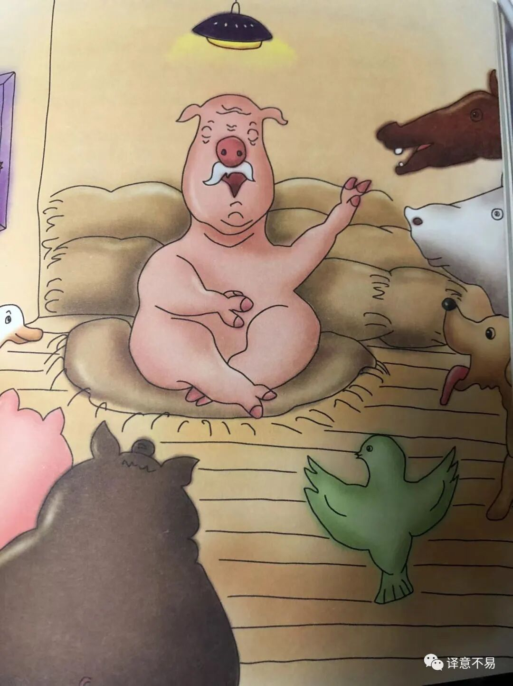

歪批《动物农场》（3）
上回说到，老Major清了清喉咙，准备开始讲梦了，不过在正式讲梦之前，Major还是动情地做了一番“人之将死，其言也善”的开场白，言道我之行将就木，欲将一生悟到的人生（动物生）的真谛传授给你们。颇有一种“天不生夫子，万古如长夜”之感。

“同志们…很显然，动物的一生是短暂的，却是凄惨而艰辛的”。老Major这一段话确实是事实，也可看作是当时俄国社会的真实写照。即使在19世纪中叶亚历山大二世做出了解放农奴等的改革，但大部分俄国人仍然生活在贫困和屈辱中，到20世纪初（革命前夜），俄国仍然是一个落后的国家，被称为“资本主义最薄弱的环节”。这就是列宁后来所宣称的社会主义革命会最早在资本主义最薄弱的环节发生的由来（与Marx的预言略有不同）。
“但是，这真的是命中注定的吗？…我们的全部劳动所得都被人类窃取走了，…人，人就是我们唯一真正的仇敌。把人从我们的生活中除掉，穷根子就会永远拔掉。”
“人是唯一不劳而获的生物，产不了奶也下不了蛋，拉不了犁，甚至笨得连个兔子都逮不住”，可是他们“不稼不穑，胡取禾三百廛兮?不狩不猎，胡瞻尔庭有县貆兮”。其实直到今天，左翼思潮也仍在质疑这种生存的不平等。动物农场中的”人“无论是影射什么，都被描述成了百无一用且贪婪、残忍。Major的这一演讲主题成功地种下了一粒种子：“只要清除人类，我们的劳动所得就会全部归我们自己所有，…奋斗！为了消除人类，全力以赴…造反。”
作为演讲的阶段性总结，Major号召动物们要“在斗争中协调一致，情同手足“。要分清敌我，”所有的人类都是仇敌，所有的动物都是同志”。这应该是影射了《共产党宣言》的结尾，即号召全世界无产者联合起来的口号。
讲完这句口号，Major做了个战术性停顿，但是，就在此时，有四只耗子也在偷偷地在听演讲，被那几只狗看见了，自然要管管闲事，于是耗子们吓得连忙逃窜回洞里，这一折腾搞得会场秩序有点骚动。这就引起了一个问题：耗子是我们的亲友还是仇敌？“耗子是同志吗？” 这个问题，对我们中国人来说也不陌生。伟大领袖早就说过，谁是我们的敌人，谁是我们的朋友，这个问题是革命的首要问题。是不是也有异曲同工之妙？而且，我小的时候，也总是纳闷，那些“地富反坏右”算不算人民呢？
那么，究竟“耗子是同志吗？” Major的梦又到底是什么呢？且听下回分享。